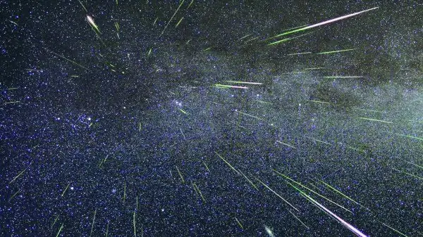

Science news ·
A meteor shower the world will see next Sunday evening – Eng. Mohammad Shawkat Odeh
Astronomers and amateurs prepare to observe the Perseids, the most popular annual meteor shower, caused by Comet Swift–Tuttle, which orbits the Sun once every 130 years.
This post is in Arabic; the title and summary above are translated. The original text follows.

يستعد علماء وهواة الفلك لرصد زخة شهب تعتبر الأكثر شعبية سنويا تسمى زخة شهب البرشاويات، نسبة إلى المجموعة النجمية “برشاوس”، والمذنب المسبب لهذه الزخة الشهابية اسمه “سويفت تتل”، وهو يدور حول الشمس مرة واحدة كل 130 سنة، وتبدأ الشهب التابعة لهذه الزخة بالسقوط نحو الأرض أثناء مرورها في الحزام الغباري للمذنب، وهو يحدث كل سنة خلال الفترة الممتدة من 17 يوليو وحتى 24 أغسطس، ويزداد عدد الشهب عندما تعبر الأرض أكثف منطقة في هذا الحزام الغباري، وهذه الفترة تكون كل سنة ما بين 11 و 13 أغسطس.
وفي هذه السنة تشير التوقعات الفلكية إلى أن الذروة التقليدية لزخة شهب البرشاويات ستحدث ليلة الأحد على الإثنين ما بين الساعة 12 صباحا وحتى الساعة 12 ظهرا بتوقيت الإمارات، وتجدر الإشارة إلى أن أحد المتخصصين العالميين رجح أن تحدث الذروة هذه السنة في الساعة 12 صباحا ليلة الأحد على الإثنين، ومن جهة أخرى ذكر أحد علماء الشهب أن ذروة ثانية من المتوقع حدوثها هذا العام يوم الإثنين في الساعة 05:37 صباح يوم الإثنين بتوقيت الإمارات. وهذه المواعيد تجعل العالم العربي خاصة المنطقة الشرقية والوسطى منه من أفضل مناطق العالم لمشاهدة زخة شهب البرشاويات هذا العام.
وتشير الحسابات أنه من المتوقع هذا العام رؤية ما يقرب من 110 شهابًا برشاويًا وقت الذروة، ولكن هذا الرقم لا يمكن رؤيته إلا من مكان مظلم تماما بعيد عن إضاءة المدن، وذلك لفترة وجيزة قرب وقت الذروة، ومن المناطق التي تكون فيها مجموعة برشاوس عالية في الأفق. أما في حالة الرصد من داخل المدينة فلا يتوقع رؤية أكثر من عشرة شهب في الساعة في أفضل الأحوال.
فعلى المهتمين برؤية هذه الشهب الرصد من مكان مظلم والنظر إلى السماء من بعد منتصف ليلة الأحد على الإثنين، ويفضل النظر نحو جهة الشرق أو الشمال، وفي العادة يزداد عدد الشهب وقت الذروة ويزداد أيضا كلما اقتربنا من موعد الفجر، وبالتالي فإن أفضل المناطق لرؤية زخة الشهب هي تلك المناطق التي تحدث فيها الذروة وقت الفجر حسب توقيتها المحلي. وهذا ينطبق هذه السنة على شرق ووسط العالم العربي كما سبق ذكره.
والشهب عبارة عن حبيبات ترابية تدخل الغلاف الجوي الأرضي، فتنصهر وتتبخر نتيجة لاحتكاكها معه وتؤين جزءًا منه، ونتيجة لذلك نراها على شكل خط مضيء يتحرك بسرعة في السماء لمدة ثوان أو جزء من الثانية. ومن النادر أن يزيد قطر الشهاب عن قطر حبة التراب، حيث يتراوح قطر الشهاب ما بين 1 ملم إلى 1 سم فقط. وتبلغ سرعة الشهاب لدى دخوله الغلاف الجوي ما بين 11 إلى 72 كم في الثانية الواحدة. ويبدأ الشهاب بالظهور على ارتفاع 100 كم تقريبا عن سطح الأرض، ويبلغ عدد الشهب التي تسقط على الأرض بحوالي 100 مليون يوميا، معظمها لا يرى بالعين المجردة.
وبشكل عام تنقسم الشهب إلى نوعين، النوع الأول هو الشهب الفردية وهي تظهر بشكل عشوائي لا يمكن التنبؤ به مسبقا، ويتراوح عددها ما بين 2 إلى 16 شهابًا في الساعة، والنوع الثاني يسمى الزخة الشهابية، وهي تحدث كل عام في نفس الموعد تقريبا، وذلك عندما تدخل الأرض الحزام الغباري لأحد المذنبات. وبعض الزخات الشهابية ضعيفة يبلغ عدد شهبها 5 شهب فقط في الساعة، وبعضها نشيط قد يصل إلى 100 أو 200 شهاب في الساعة، وفي أحيان نادرة قد تصل إلى مستوى عاصفة شهابية وذلك إن زاد عدد شهبها عن 1000 شهاب في الساعة، وكانت آخر عاصفة شهابية شهدتها الأرض يوم 18 نوفمبر 1999م.
غالبا ما يميل لون الشهاب إلى الأصفر. ويعتبر لون الشهاب مؤشرا لمكوناته: فذرات الصوديوم تعطي للشهاب اللون البرتقالي – الأصفر، والحديد يعطي اللون الأصفر، والمغنيسيوم يعطي اللون الأزرق المخضر، والكالسيوم يضفي اللون البنفسجي بعض الشيء، والسيليكون يعطي اللون الأحمر. وبشكل عام، فإن الشهب لا تصدر أصواتا، إلا أنه قد يسمع للشهاب اللامع (الكرة النارية) صوتٌ أحيانًا يشبه الهسيس، ويعتقد أن هذا الصوت ناتج عن أمواج راديوية ذات ترددات منخفضة، وفي أحيان نادرة قد يصدر الشهاب صوتا يشبه صوت الطائرة لدى اختراقها حاجز الصوت. وقد يترك الشهاب خلفه ذيلا دخانيا، غالبا ما يميل لونه إلى الأخضر بسبب ذرات الأكسجين، وعادة ما يدوم الذيل الدخاني من 1 – 10 ثوانٍ، وقد يدوم من 1 – 30 دقيقة أحيانا.
هذا ولا تشكل الشهب أي خطر على سطح الأرض إطلاقا حتى وإن كانت على شكل عاصفة، فجميع الشهب تتلاشى قبل وصولها إلى سطح الأرض، إلا أن هناك خطرا حقيقيا قد تشكله الحبيبات الترابية على الأقمار الصناعية التي تدور حول الأرض، والتي يبلغ عددها حوالي 500 قمر صناعي عامل. حيث قد تصل سرعة الشهاب إلى 72 كم في الثانية الواحدة (200 ضعف سرعة الصوت). واصطدام جسيم بهذه السرعة قطره أقل من قطر شعرة الإنسان بإمكانه تكوين شرارة كهربائية كفيلة بأن تعطل أجهزة القمر الصناعي الحساسة، وبالتالي إيقافه عن العمل. فعلى سبيل المثال تعطل قمر الاتصالات أوليمبوس أثناء زخة شهب البرشاويات عام 1993 بسبب اصطدامه مع إحدى الحبيبات الترابية.
المهندس محمد شوكت عودة
Migrated from the AUASS website archive as published, with the formatting tidied.